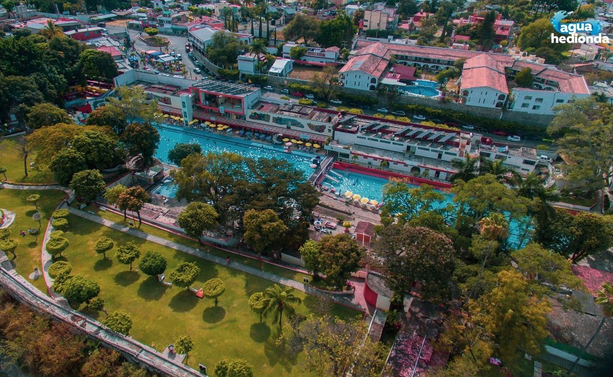
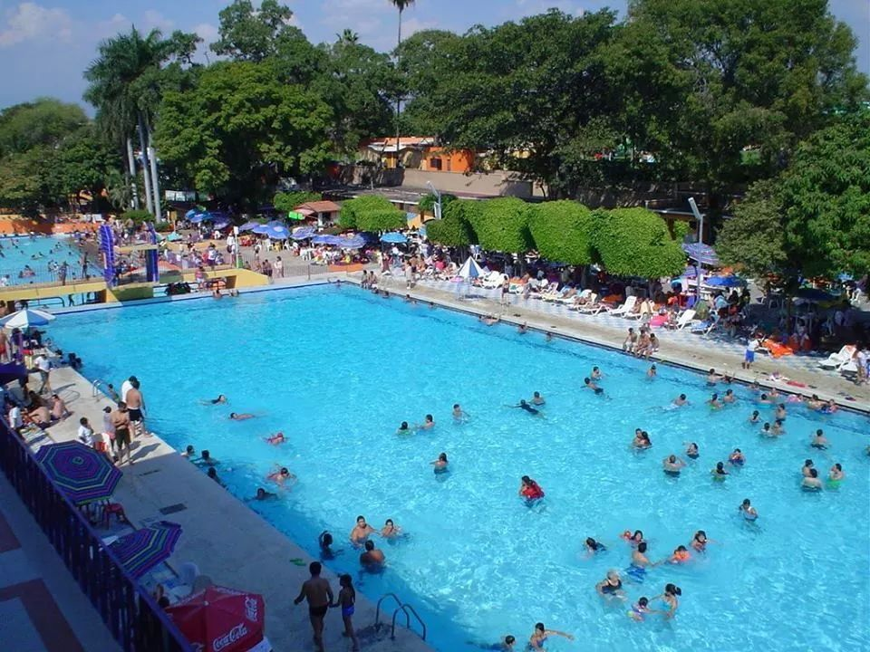

📸 Galería de Imágenes


🏊♂️ Propiedades del Manantial y Reseña
El Balneario Agua Hedionda es mundialmente famoso por las propiedades medicinales de sus aguas, catalogadas como unas de las mejores del planeta debido a su alto contenido de minerales y azufre. Su nombre proviene del característico olor que desprenden estas aguas de origen volcánico, las cuales brotan directamente de un manantial alimentado por los deshielos de los volcanes Popocatépetl e Iztaccíhuatl. Desde la época prehispánica y colonial, este sitio ya era considerado un santuario de sanación y descanso.
Hoy en día, el complejo ofrece una experiencia que combina salud y diversión en un ambiente tradicional. Cuenta con una gran alberca principal, una alberca mediana, toboganes, áreas de juegos infantiles, extensas áreas verdes y tinas privadas de hidromasaje. El agua se renueva de manera constante de forma natural y se mantiene a una agradable temperatura promedio de 27 °C, lo que lo convierte en el destino ideal para quienes buscan aliviar dolores musculares, desintoxicar la piel o simplemente relajarse en familia.